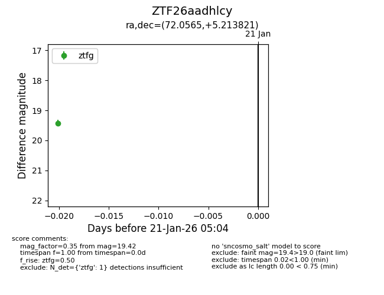
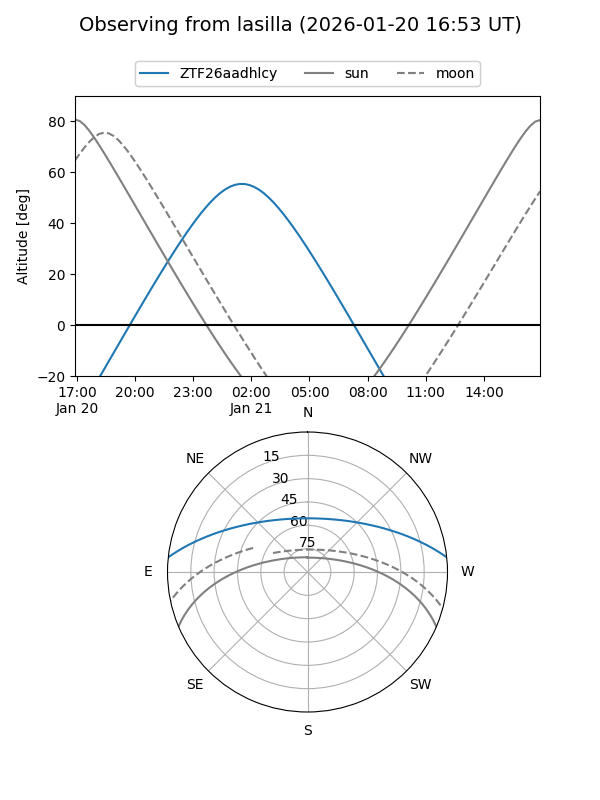
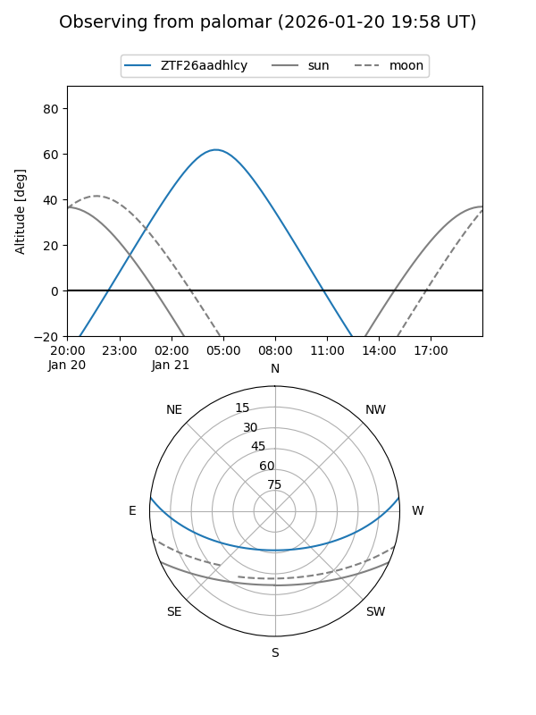

ZTF26aadhlcy
Target ZTF26aadhlcy at 2026-01-21 05:05
Aliases and brokers:
FINK: link
Lasair: link
ALeRCE: link
alt names
ZTF26aadhlcy (ztf,fink_ztf)
Coordinates:
equatorial (ra, dec) = 72.0565,+5.21382
equatorial (HMS+DMS) = 04:48:13.56,+05:12:49.76
galactic (l, b) = (192.8090,-24.35756)
Flags:
Photometry:
last ztfg=19.42
1 ztfg detections
Lightcurve

Visibility


Additional plots